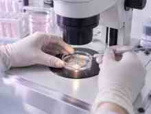

أمراض النساء والتوليد
رعاية لصحتكِ في مختلف مراحل حياتكِ

في مركز إنجاب، نفهم أن لكل امرأة حكاية. مع د/ سلوى محمد عوض، نرافقكِ برعاية تهتم بتفاصيلكِ وتبدأ منكِ ومن احتياجاتكِ.
📍 دكرنس – شارع مجلس المدينةمن صحتكِ اليومية إلى حلم الأمومة، نحن هنا لنعتني بكل مرحلة.
رعاية لصحتكِ في مختلف مراحل حياتكِ
معكِ في كل مرحلة من رحلة الحمل
تقييم متأنٍ وخطة تناسب حالتكما
نفهم الخيارات ونختار الأنسب معًا
تقييم دقيق لمدى احتياجكِ للتدخل
متابعة تفاصيل نمو طفلكِ
استشارة خاصة واهتمام باحتياجاتكِ
خطوتكِ الأولى تبدأ باستشارة
احجزي موعدكِ ←في مركز إنجاب، تبدأ الرعاية بحوار هادئ معكِ؛ لفهم ما تشعرين به، ومراجعة تاريخكِ الطبي، وتقييم حالتكِ بعناية.
نهتم بأن تكوني شريكة في كل خطوة، من فهم التقييم والخيارات المتاحة إلى وضع خطة فردية تناسب احتياجاتكِ.
احجزي استشارتكِنبدأ بتقييم الزوجين وفهم الأسباب المحتملة، ثم نناقش الخيارات المناسبة، بما فيها الحقن المجهري وأطفال الأنابيب عند الحاجة.
ابدئي باستشارة
متابعة منتظمة للاطمئنان على صحتكِ ونمو طفلكِ، ومناقشة ما تحتاجينه في كل مرحلة.
احجزي متابعة حملكِعبر واتساب أو الاتصال على 01070868615 لمعرفة المواعيد المتاحة وتأكيد الحجز.
واتساب للحجز والاستفسار عن المواعيد، أما التشخيص والعلاج فيحتاجان إلى تقييم طبي.
تواصلي معنا لحجز زيارتكِ في مركز إنجاب.
دكرنس – شارع مجلس المدينة – برج رضا سامي – الدور الأول – بجوار حلواني أبو عطوة
يتم تحديث المواعيد أسبوعيًا